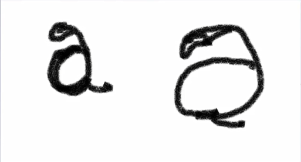
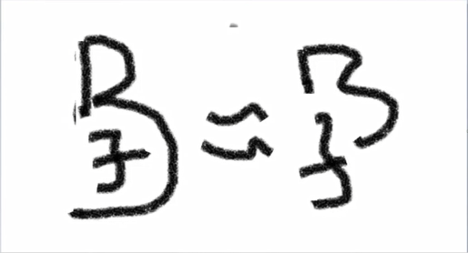

1. A
1.1. 一再
again /əˈɡen; əˈɡeɪn/ adv. 又，此外；再一次；再说；增加
alive /əˈlaɪv/ adj. 活着的；活泼的；有生气的
awake /əˈweɪk/ adj. 醒着的. v. 觉醒，意识到；使醒来，被唤起，激发起
account /əˈkaʊnt/ n. 账户；解释；账目，账单；理由；描述. vi. 解释；导致；报账. vt. 认为；把…视为(a count,不断数数/解释)
1.2. 无, 非(1≈0)
moral /ˈmɒrəl/ adj. 道德的；精神上的；品性端正的. n. 道德；寓意
amoral /ˌeɪˈmɒrəl/ adj. 与道德无关的；无从区分是非的；超道德的
immoral /ɪˈmɒrəl/ adj. 不道德的；邪恶的；淫荡的(双写辅音m + 元音i, = 加强,否定)
1.3. 听, 耳朵
aural /ˈɔːrəl/ adj. 听觉的；耳的；气味的；先兆的
oral /ˈɔːrəl/ adj. 口头的，口述的
visual /ˈvɪʒuəl/ adj. 视觉的，视力的；栩栩如生的
audio /ˈɔːdiəʊ/ adj. 声音的；[声] 音频的
video /ˈvɪdiəʊ/ n. [电子] 视频；录像，录像机；电视. adj. 视频的；录像的；电视的. v. 录制(v: 看)
visit /ˈvɪzɪt/ n. v. 访问，参观；浏览（网页）；视察；逗留；咨询；闲谈; 拜访
vision /ˈvɪʒn/ n. 视力；美景；眼力；幻象；想象力； vt. 想象；显现；梦见
audit /ˈɔːdɪt/ n. 审计，稽核；查账；审查，检查； v. 审计，稽核；查账；进行财务审查；系统检查；内部审计；旁听
auditor /ˈɔːdɪtə(r)/ n. 审计员；听者；旁听生
audience/ˈɔːdiəns/ n. 观众；听众；读者；接见；正式会见；拜会
a large audience 大量观众, a small audience 少量观众
auditorium /ˌɔːdɪˈtɔːriəm/ n. 礼堂，会堂；观众席; 听众席; 大礼堂(um表示地点)
museum /mjuˈziːəm/ n. 博物馆(muse: n/vi/vt 思考,沉思；冥想. 一个陷入思考的地方=博物馆)
1.4. 尖尖的
arrow /ˈærəʊ/ n. 箭，箭头；箭状物；箭头记号. vt. 以箭头指示；箭一般地飞向
acute /əˈkjuːt/ adj. 严重的，[医] 急性的；敏锐的；激烈的；尖声的; 尖锐的
angle /ˈæŋɡl/ n. 角，角度；视角；立场；角铁；（古）鱼钩
acute angle [数] 锐角
angel /ˈeɪndʒl/ n. 天使；守护神；善人. vt. 出钱支持
acupuncture /ˈækjupʌŋktʃə(r)/ n. （中医）针刺疗法，针灸. v. 对……施行针刺疗法(acu pun=pin大头针)
1.5. 鸟(视频2, time: 09:50)
avi-鸟, vi-生命
vivid /ˈvɪvɪd/ adj. 生动的；鲜明的；鲜艳的(graphic /ˈɡræfɪk/ adj. 栩栩如生的; 形象的；图表的；绘画似的)
live /lɪv; laɪv/ v. 居住；生存，活着；生活；留存，铭记；生长，栖息；
life /laɪf/ n. 生活，生存；寿命(f/v 通假)
aviculture /ˈeɪvɪkʌltʃə(r)/ n. 养鸟；鸟类饲养(avi鸟 + culture培养 = 鸟类饲养)
culture /ˈkʌltʃə(r)/ n. 文化，文明；修养；栽培
cultivate /ˈkʌltɪveɪt/ vt. 培养；陶冶；耕作
cultivate one's mind. 培养一个人的心灵。修生养性
aviation /ˌeɪviˈeɪʃn/ n. 航空; 航空学；飞行术；飞机制造业
civil aviation /ˈsɪvl ˌeɪviˈeɪʃn/ 民用航空
CAAC 中国民用航空局(Civil Aviation Administration Of China)
2. B
2.1. 凸(b)
ball /bɔːl/ n. 球；舞会. vi. 成团块. vt. 捏成球形
bra /brɑː/ n. 胸罩; 护胸甲(类似斯巴达佩戴的那种)
brave /breɪv/ adj. 勇敢的，无畏的；表现勇敢的； v. 勇敢面对 n. 勇敢的人
brace /breɪs/ n. 夹子；支架；牙箍；背带（常复数）；支柱; 大括号；曲柄； v. 使做准备；抵住；绷紧；支撑；加固
embrace /ɪmˈbreɪs/vt. 拥抱；欣然采纳；信奉；包含 vi. 拥抱 n. 拥抱；采纳
bear /beə(r)/ vt. 忍受；承担；具有；负担；生孩子；结果实；开花 n. 熊；泰迪熊
birth /bɜːθ/ n. 出生；血统，出身；起源
born /bɔːn/ v. 出生；出现（bear 的过去分词） adj. 天生的；出生的；天赋的；创造的
2.2. 新旺
boom /buːm/ v. 使兴旺；繁荣; 发隆隆声；急速发展；用低沉的声音讲话；鸣叫 n. 繁荣
blood /blʌd/ n. 血，血液；血统；
bloom /bluːm/ n. 花；青春；旺盛. vt. 使开花；使茂盛. vi. 开花；茂盛
blossom /ˈblɒsəm/ n. 花；开花期；兴旺期；花开的状态；漂亮的人 v. 开花；兴旺；成功发展
bosom /ˈbʊzəm/ n. 胸；胸怀；中间；胸襟；内心；乳房；内部 vt. 怀抱；把…藏在心中 adj. 知心的；亲密的
2.3. 灭亡, 否定
blast /blɑːst/ n. 爆炸；爆炸;冲击波；一阵 vi. 猛攻 vt. 爆炸；损害；使枯萎
burst /bɜːst/ v. 爆裂;迸发；戳破；爆裂；（器官或血管）爆裂
burst into tears. 突然大哭, 放生大哭
bust /bʌst/ v. 打破；炸破；猛烈打击；突击搜捕 n. 胸围；半身像；经济萧条；逮捕； 没价值的事物 adj. 坏的；破产的
2.4. ab --分开, 否定, 加强
absent-mindedness /ˌæbsənt ˈmaɪndɪdnəs/ n. 心不在焉(的状态)；心神不定
abandon /əˈbændən/ v. 遗弃；离开；放弃；终止；陷入 n. 放任，狂热
abscond /əbˈskɒnd/ vi. 逃匿，潜逃；避债(ab + sco=see, 不让别人看见)
abstain /əbˈsteɪn/ v. （投票时）弃权，放弃；避免，回避；自制，戒除(ab+tain拿住,持有 = 放弃)
tain /teɪn/ n. 锡箔 拿住,持有, 握住
attain /əˈteɪn/ vi/vt. 达到，实现；获得(达到目标)；到达 n. 成就(双写辅音t+元音a, 表示加强, 不断拿...)
sustain /səˈsteɪn/ vt. 维持；支撑，承担；忍受；供养；证实(sus上下+tain = 上下拿着,托住)
obtain /əbˈteɪn/ vi. 获得(东西)；流行 vt. 获得(ob-加强)
suspect /səˈspekt/ v. 怀疑；猜想 n. 嫌疑犯 adj. 靠不住的；可疑的(sus上下+pec看 = 怀疑)
respect /rɪˈspekt/ n. 尊敬，尊重；方面；敬意 vt. 尊敬，尊重；遵守
3. C
3.1. 半圆
circle /ˈsɜːkl/ n. 循环，周期；圆；圈子；圆形物 vi. 盘旋，旋转；环行 vt. 画圆圈；环绕…移动
bicycle /ˈbaɪsɪkl/ n. 自行车 vi. 骑脚踏车
tricycle /ˈtraɪsɪkl/ n. [车辆] 三轮车(tri--try,尝试3次)
car /kɑː(r)/ n. 汽车；车厢
3.2. 前进(滚动,轮回)
cess /ses/ n. 税款；地方税；运气 v. 征税 走路(c前进+e向外+ss行进路线s形 = 走路)
access /ˈækses/ n. 通道；进入；机会；使用权；探望权； v. 接近，使用；访问，存取 adj. （电视节目或时间等）对外公开的
accessible /əkˈsesəbl/ adj. 易接近的；可进入的；可理解的; 可接近的
inaccessible /ˌɪnækˈsesəbl/ adj. 难达到的；难接近的；难见到的; 不可接近的
3.3. 包括(hold住)
include /ɪnˈkluːd/ vt. 包含，包括
inclusive /ɪnˈkluːsɪv/ adj. 包含的，包括的；包含全部费用的；包容的
inclusion /ɪnˈkluːʒn/ n. 包含；内含物; 包容
exclude /ɪkˈskluːd/ vt. 排除；排斥；拒绝接纳；逐出
exclusive /ɪkˈskluːsɪv/ adj. 独有的；排外的；专一的
exclusion /ɪkˈskluːʒn/ n. 排除；排斥；驱逐；被排除在外的事物
conclude /kənˈkluːd/ vt. 推断；决定，作结论；结束 vi. 推断；断定；决定 总括
conclusive /kənˈkluːsɪv/ adj. 决定性的；最后的；确实的；确定性的 总括的
conclusion /kənˈkluːʒn/ n. 结论；结局；推论 总结
in conclusion. 总而言之
to conclude. 总之
3.4. 拿住
cup /kʌp/ n. 杯子；奖杯；酒杯 vt. 使成杯状；为…拔火罐
occupy /ˈɒkjupaɪ/ vt. 占据，占领；居住；使忙碌(双写辅音c+元音o, 一直拿)
preoccupy /priˈɒkjupaɪ/v. （使）全神贯注；提前占据;迷住；使日夜思考；使忧心忡忡
cap /kæp/ n. 盖；帽子 vi. 脱帽致意 vt. 覆盖；胜过；给……戴帽；加盖于
capture /ˈkæptʃə(r)/ vt. 俘获；夺得；捕捉，拍摄，录制, 捕获
captive /ˈkæptɪv/ adj. 被俘虏的；被迷住的 n. 俘虏；迷恋者
captivate /ˈkæptɪveɪt/ v. 迷住，使……着迷
handicap /ˈhændikæp/ n. 障碍；不利条件，不利的因素 vt. 妨碍，阻碍；使不利 使残废
mental handicap. /ˈmentl ˈhændikæp/ 心理缺陷；心智障碍
physical handicap./ˈfɪzɪkl ˈhændiːkæp/ 身体缺陷；生理缺陷
cip-
participate in /pɑːˈtɪsɪpeɪt/ vi. 参与，参加；分享(part + i连字符 + cip)
participant /pɑːˈtɪsɪpənt/ n. 参与者，参加者 adj. 参与的
take part in 参加，参与
take an active part in 积极参加
cep-
accept /əkˈsept/ vt. 接受(心理上的, 主观)；承认；承担；承兑；容纳(双写辅音c+元音a, 表示加强. 不断拿=接受)
receive /rɪˈsiːv/ vt. 收到；接待；接纳 vi. 接收(客观上的收到东西)
cop /kɒp/ n. 巡警，警官; 警察；绕在纺锤上的锥形线卷； v. 抓住，抓获，逮捕；受罚；遭受；忍受
3.5. 拿住(拿捏)--理解(掌握)
ceive-
conceive /kənˈsiːv/ vt. 怀孕；构思；以为；持有 vi. 怀孕；设想；考虑
concept /ˈkɒnsept/ n. 观念，概念
deceive /dɪˈsiːv/ v. 欺骗；行骗(de-下,坏 + ceive = 去下面思考, 从坏处思考)
deception /dɪˈsepʃn/ n. 欺骗，欺诈；骗术
deceptive /dɪˈseptɪv/ adj. 欺诈的；迷惑的；虚伪的
3.6. 循环
circulate /ˈsɜːkjəleɪt/ vi. 传播，流传；循环；流通 vt. 使循环；使流通；使传播
recycle /ˌriːˈsaɪkl/ v. 回收利用；使再循环；重新使用 n. 回收利用，循环使用
recyclable /ˌriːˈsaɪkləbl/ adj. 可回收利用的；可再循环的
non-recyclable 不可回收利用的
3.7. 镰刀
cut /kʌt/ v. 割破；（用刀等）切下，割成；剪短；释放；剪裁；削减；删节；剪切 n. 切，割；伤口；开口